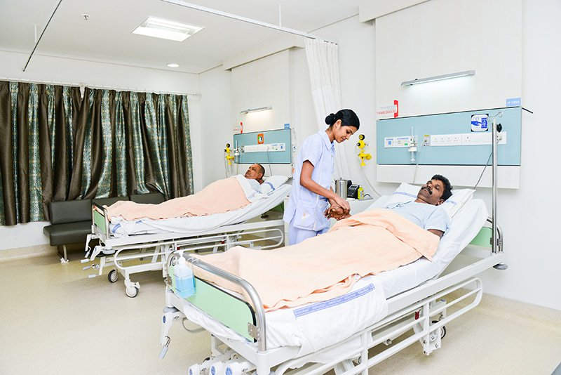

Patient visiting hour policy
Mercy healthcare family believes that family and friends of patients play an important role in the early recovery of every patient, we value the emotions of our patients and their family.
So for the comfort of our patients we request them to visit during the 'Visiting hours', which are as follows:
- Only One attendant is allowed to stay with patient on 24 hrs basis (overnight).
- Attendant & Visitor's Pass - one each will be issued at the time of admission for patients being admitted
- The passes are non-transferable .Also they are returnable at the time of Discharge
- Entry to patient room is strictly to Attendant & Visitor Pass
- All visitors must wash their hands before contact with the patients.
- Requests to visit patients in compassionate-care situations may be approved by the Nursing Superintendent or Administrator on duty
- Visitors to the following units must be 18 or older:
- Adult Intensive Care Units (RICU, MICU, SICU,CCU etc)
- Neonatal & Paediatric Intensive Care Unit (NICU, PICU)
- Children below 12 yrs of age are not allowed to visit the patient.
- Siblings of patients will be allowed to visit our Obstetrics and Paediatric units — including Paediatric Intensive Care and Neonatal Intensive Care units — as long as they do not exhibit symptoms of a cold or other contagious illness
- Attendants waiting area is on Ground floor. Attendants of all ICU patients can also wait in waiting area on Ground floor (Only one ICU Attendant can stay overnight).
- Visiting hours and rules are established for the comfort and safety of Patients. Visitation is important to a patient’s healing process and visitors are a welcomed part of treatment.
NOT ALLOWED
Flowers
Outside food for patients
Helmets
Outside Medications
Visiting Hours for IPD Wards — 5:00 p.m. to 7 p.m.
The number of visitors in a patient room is limited to two; apart from the attendant who stays with the patient for 24 hrs a day
Maternity Visiting Hours — 10 a.m.-9 p.m.
The baby’s father or designated support person may visit 24 hours a day with an identification bracelet provided by the hospital staff.
Siblings of all ages may visit.
All visitors must be free from infections, rashes, earaches, runny noses, diarrhea or recent exposure to infectious diseases. All visitors must wash their hands before contact with the baby.
Valuables Policy
Please do not bring any valuables in the Hospital. Hospital Management shall not be responsible for any loss of your valuables.
Please do not handover your mobile phone/valuable to any unknown persons or Hospital Staff.
Attendants in Single, Deluxe Rooms are advised not to leave the room unattended. However, if you are leaving the room along with the patient for any reason, please inform the concerned Sister-in charge or Staff Nurse on-duty for making arrangements to lock your room
